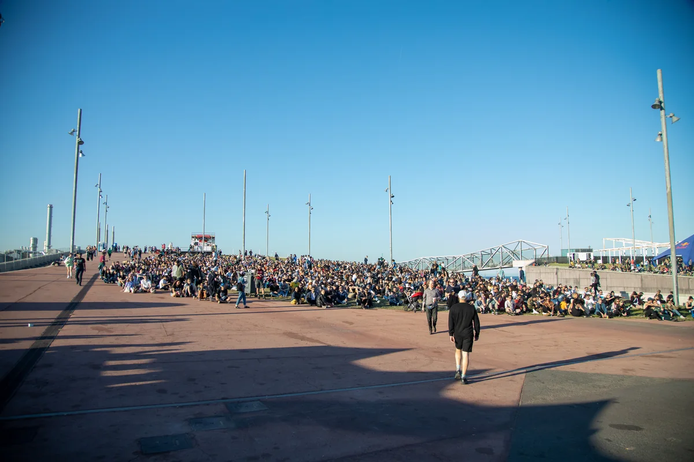
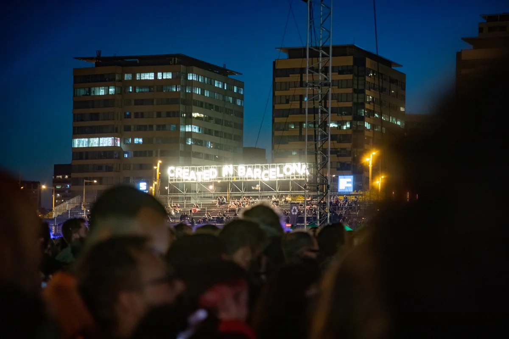
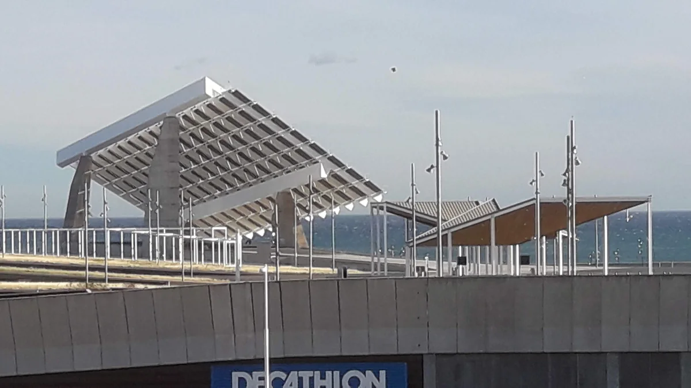
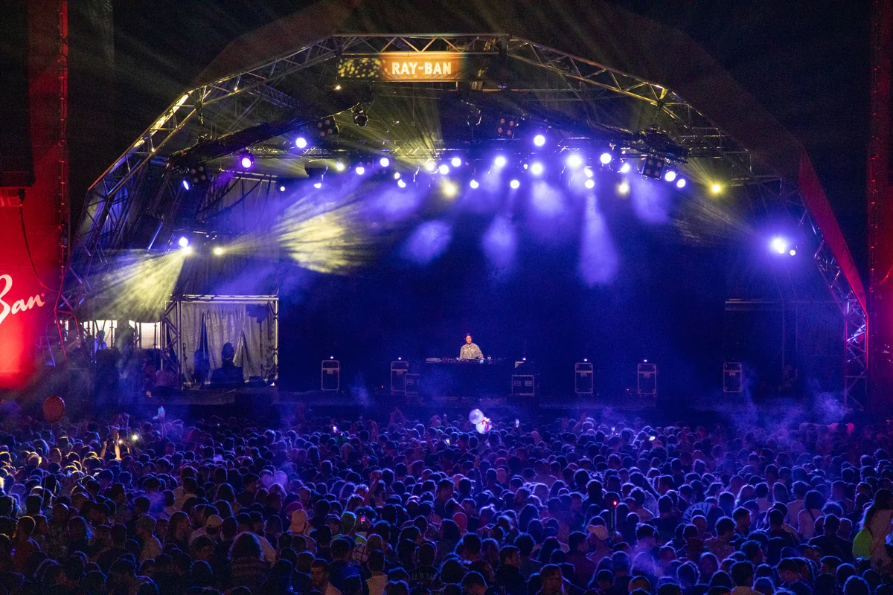
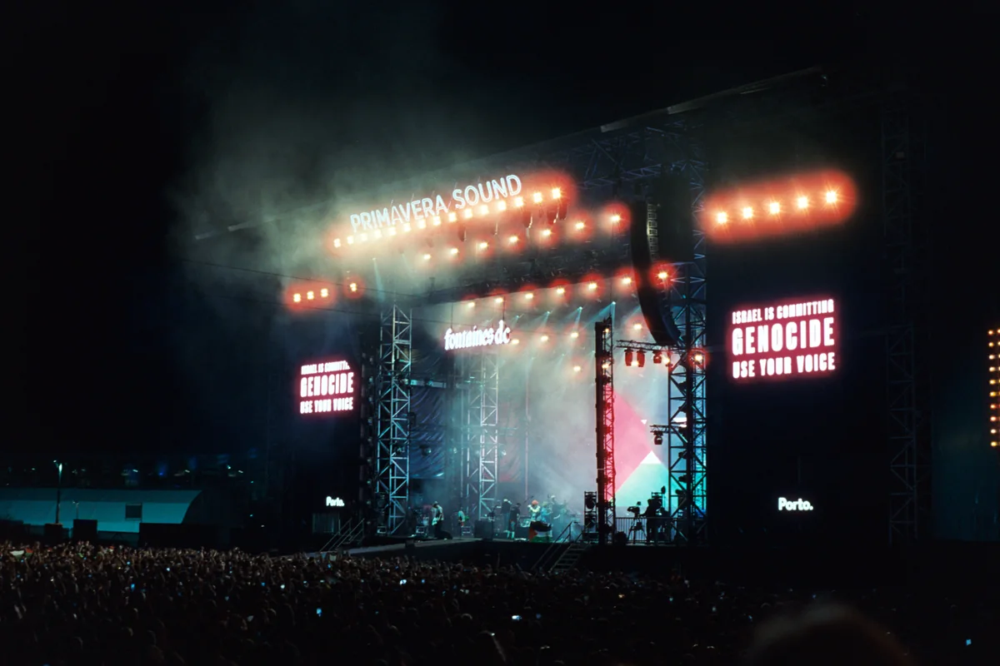

Primavera Sound
Primavera Sound Barcelona
The main Barcelona programme returns to Parc del Fòrum on 3, 4 and 5 June 2027. Here is the waterfront location, scale, music and connection to Porto.
A festival built around range.
The Primavera Sound festival is built around range rather than one genre. A guitar band can finish as a techno set begins; a pop headliner can share the night with noise rock, rap, ambient music and a live experiment in the Auditori. Its identity came from independent music, but the modern festival is much wider than the word indie suggests.

This guide answers the main questions behind searches for Primavera Sound Barcelona: what the festival is, its dates and location, how many people attend, what music it plays, and how Primavera a la Ciutat and Primavera Sound Porto fit into the same name. It does not chase line-ups or set times, which change every edition and belong on the official programme.
What is Primavera Sound?
Primavera Sound is a multi-genre urban music festival created in Barcelona. The Primavera festival's first edition under that name took place at Poble Espanyol on 28 April 2001. It was one day, sold about 7,700 tickets and leaned towards indie rock and electronic music. By 2004 it had expanded to three days; in 2005 it moved across the city to Parc del Fòrum, the large waterfront site that still defines the Barcelona edition.
That move changed the scale without turning Primavera into a conventional field festival. There are no campsites or country lanes around it. The stages sit on concrete plazas, auditoriums and seafront spaces at the edge of the city, while a parallel programme reaches into Barcelona's clubs and music venues.

The useful short history is a sequence of expansions:
| Year | What changed |
|---|---|
| 2001 | First one-day Primavera Sound at Poble Espanyol; about 7,700 tickets |
| 2004 | The Barcelona festival expanded to three days |
| 2005 | Moved to Parc del Fòrum |
| 2008 | City-venue programme developed into Primavera a la Ciutat |
| 2012 | First Primavera Sound Porto |
| 2019 | A gender-balanced bill was presented as The New Normal |
| 2022 | Exceptional two-weekend Barcelona edition after the pandemic cancellations |
| 2027 | Main Barcelona programme scheduled for 3 to 5 June at Parc del Fòrum |
The festival's name now covers more than the three main days. Primavera a la Ciutat puts concerts into city venues around the central weekend. Primavera Pro brings music-industry meetings, talks and showcases alongside it. A separate Porto edition has run in Portugal since 2012.
Primavera Sound is sometimes described as an indie festival because of where it began. That is history, not a complete genre label. Its later bills have put global pop, hip-hop, reggaeton, techno, house, metal, jazz and experimental music beside the guitar bands that established its reputation.
Primavera Sound Barcelona: dates and location.
Primavera Sound Barcelona 2027 is scheduled for Thursday 3, Friday 4 and Saturday 5 June 2027. The main Primavera Sound location is Parc del Fòrum, on Barcelona's north-eastern waterfront between the Sant Martí district and Sant Adrià de Besòs. The festival has used the site since 2005, and its agreement with the city keeps it there through 2030.

Parc del Fòrum is a public event space of about 200,000 square metres managed by Barcelona de Serveis Municipals. Its huge esplanade, open-air auditoriums, waterfront platforms and indoor Auditori give Primavera several kinds of stage without leaving the site. The photovoltaic canopy above the esplanade is one of the landmarks visible across the festival.
The nearest metro stop is El Maresme | Fòrum on line L4. Because this is an urban festival, readers should think of the location as a district of Barcelona rather than an isolated festival field: people travel in, return to accommodation in the city and may attend related concerts elsewhere during the week.
The three dates above are for the main Parc del Fòrum programme. Opening events, Primavera a la Ciutat shows and a closing event may extend the calendar. Their venues and access arrangements change, so the official schedule is the final source once it is published.
How big is Primavera Sound?
Primavera Sound reported 293,000 attendances across its Barcelona programme in 2025, including visitors from 136 countries; 65% of the audience came from outside Spain. That figure describes entries across several days and events. It should not be read as 293,000 different people standing inside Parc del Fòrum at once.
The distinction matters because festival totals are counted in different ways. Someone with a three-day pass can generate an attendance on each day, and the published total may also include city concerts or the closing programme. Capacity, unique ticket holders and cumulative attendance are three different numbers.
The growth is still clear. The first one-day edition sold roughly 7,700 tickets. Primavera passed 100,000 attendances around its tenth anniversary, and the exceptional two-weekend Barcelona edition in 2022 reported more than 460,000 visits across the full programme. Recent normal-format editions have settled into the high hundreds of thousands of cumulative attendances.
Scale has made Primavera international without erasing its Barcelona setting. The festival fills hotels, metro trains and venues across the city, but its main site is still woven into an ordinary urban waterfront rather than built as a temporary world away from it.
The music
What music plays at Primavera Sound?
Primavera Sound is a music festival with an indie-rock foundation and a deliberately broad modern programme. Its history includes repeat appearances by artists such as Shellac, Sonic Youth, PJ Harvey, The National and Arcade Fire, but the same stages have hosted Kendrick Lamar, Rosalía, Tyler, the Creator, Charli XCX, Bad Bunny, Grace Jones and a long line of electronic artists.
For an electronic-music listener, the important detail is that club music is not confined to a token dance tent. House, techno, electro, ambient and left-field live electronics run late, often on stages near the sea. Boiler Room has operated a stage inside the festival, while broadcasters and platforms including NTS and ARTE have recorded performances there.

Peggy Gou closing a packed stage in 2019 is one version of Primavera. DJ Ramon Sucesso's fast, percussive mix for Boiler Room in 2024 is another: Brazilian funk, edits and club music in a programme that also included major pop and rock shows. Badsista's 2022 Boiler Room set pushes the same connection towards baile funk, hard dance and hip-hop.
That range is the point. Primavera is not an EDM festival, although electronic music is central to it, and it is no longer accurately described as only indie rock. It behaves more like several neighbouring festivals sharing one site and audience. For a Barcelona event focused more narrowly on electronic music and technology, see our guide to Sónar.
Primavera a la Ciutat.
Primavera a la Ciutat means Primavera in the City. It is the programme of concerts held in Barcelona venues around the main festival days, a tradition that developed from the club shows surrounding Primavera and was established under the current name in 2008.
These are not extra stages inside Parc del Fòrum. They are performances in clubs and concert halls around Barcelona, historically including venues such as Sala Apolo, La (2) de Apolo, Razzmatazz, Paral·lel 62, La Nau and LAUT. The rooms are much smaller than the festival stages, which is the attraction and the complication: admission, reservations and queues can work differently from the main site.
Primavera Pro sits beside this city programme but serves a different purpose. It is the professional side of the festival, with conferences, meetings and showcases for artists and the international music business. Some showcases may be visible to general festivalgoers, but a Pro accreditation is a separate product.
Treat the official programme as the authority for each year's venues and access. A festival pass has often included access to parts of Primavera a la Ciutat, but a pass has not always guaranteed entry to a small room once it is full.
Primavera Sound Porto.
Primavera Sound Porto is the Portuguese edition of the festival. It began in 2012 and takes place at Parque da Cidade, Porto's large coastal city park. It carries the Primavera approach to programming, but it is not an overflow weekend or a duplicate of Barcelona: Porto has its own dates, tickets, site and line-up.

The contrast between the locations is part of the appeal. Barcelona is concrete, architecture and sea at the Fòrum; Porto is grass and trees in a park that reaches the Atlantic. Some artists play both editions, but the schedules are not identical and a ticket for one does not cover the other.
Alan Sparhawk's official full set from Porto shows the smaller-scale side of the festival name: a complete performance rather than a main-stage montage.
Other Primavera-branded events have appeared in cities including Los Angeles, Buenos Aires, São Paulo and Madrid, with different lifespans and formats. For the stable distinction behind the search terms, remember two places: Primavera Sound Barcelona at Parc del Fòrum, and Primavera Sound Porto at Parque da Cidade.
Primavera Sound FAQ.
Is Primavera Sound 18+?
No. Under the official Barcelona ticket conditions, children aged 14 and under can enter free with a parent or legal guardian. A 15-year-old needs a paid ticket and must be accompanied. People aged 16 and 17 with tickets are treated as adults and do not need an accompanying adult. Some pre-festival and post-festival club concerts are restricted to people aged 18 and over, so the rule for the main site does not automatically apply to every Primavera a la Ciutat venue.
Do people camp at Primavera Sound?
No official campsite operates at Parc del Fòrum. Primavera Sound Barcelona is a city festival: visitors stay in hotels, hostels, apartments or other accommodation and travel to the site each day. The main programme can run very late, so the journey back is part of planning the festival.
How many people go to Primavera Sound?
Primavera Sound reported 293,000 cumulative attendances across its Barcelona programme in 2025. That is a multi-day total, not the number of unique people inside the main site at one time. The same attendee may be counted on more than one day, and associated city events can be included.
What does Primavera mean literally?
Primavera means spring in Spanish, Catalan, Italian and Portuguese. The Barcelona festival takes place at the end of spring, so Primavera Sound can be understood loosely as the sound of spring.
Where will Primavera Sound 2027 be held?
The main Primavera Sound Barcelona programme for 2027 will be held at Parc del Fòrum on 3, 4 and 5 June. The waterfront venue lies between Barcelona and Sant Adrià de Besòs and is served by El Maresme | Fòrum metro station on line L4.
Sources.
- Primavera Sound Barcelona: official site
- Primavera Sound Barcelona: official ticket and age conditions
- Parc del Fòrum: official venue guide
- Catalan News: next dates and Parc del Fòrum agreement
- RTVE: Primavera Sound attendance and international audience
- Primavera Sound: historical press dossier
- Primavera Sound: Primavera a la Ciutat and festival history
- Primavera Sound Porto: official historical press dossier
- Boiler Room: Primavera Sound Barcelona session
- Wikipedia: Primavera Sound chronology and source map
Continue reading
Read next.
 A11Guide / Burning Man / ~13 min
A11Guide / Burning Man / ~13 minWhat Is Burning Man? The Event, the City and the Music
A participant-built city in the Nevada desert, with no central lineup or main stage, and the sound camps and art cars that programme their own music.
Read article → A10List / Boiler Room / ~14 min
A10List / Boiler Room / ~14 minBest Boiler Room Sets of All Time, Ranked and Measured
Eighteen sets picked for what happens in them, beside the ten most-watched, counted across 8,206 Boiler Room recordings.
Read article → A12Guide / Berlin clubs / ~10 min
A12Guide / Berlin clubs / ~10 minBest Clubs in Berlin: The Legends and the Ones Still Open
The rooms that made Berlin a techno city, the famous clubs that closed, and the best clubs in Berlin that are still open.
Read article → A13Guide / London clubs / ~12 min
A13Guide / London clubs / ~12 minBest Electronic Music Clubs in London: History and Where to Go
The best electronic music clubs in London now, plus the rooms that shaped acid house, jungle, garage and dubstep.
Read article →